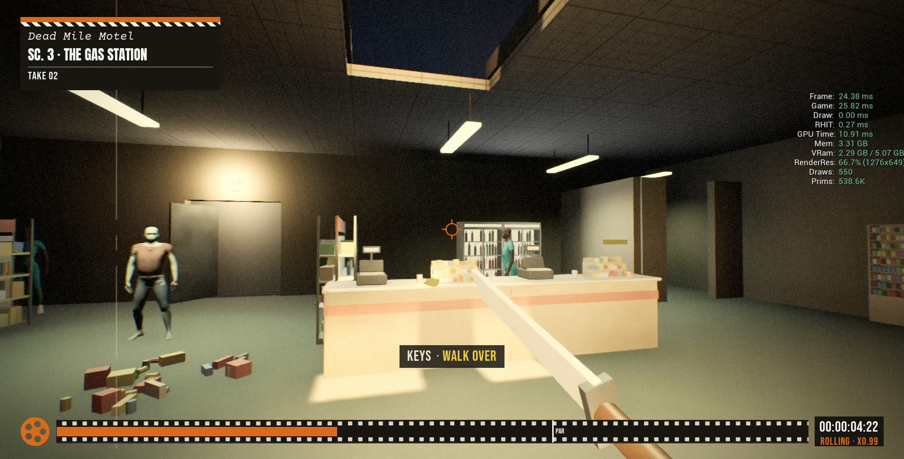
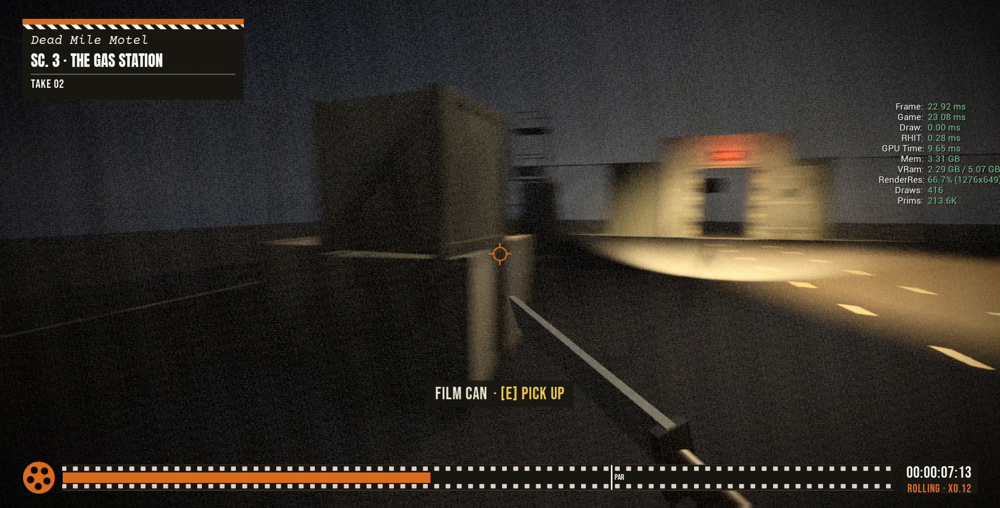

Tape on the floor: my playtest notes, three hours on
Four of this morning's eight playtest notes were on film by 10:00, starting with a trail of tape marks to the objective. Six of the seven levels now finish by their own script.
Day 2, Fri 13 NovHour 30
I gave the Director eight notes at 07:28. The 09:30 filming block caught the first answers. This is the autoplayer on Zombie 01, on the build the engine merged at 09:26.
"I still find it hard to navigate"
I asked for prototypes, not a fix. The first one is what a film crew would do: tape on the floor. Orange marks lead to wherever the script's current line wants me, and shrink with distance.
There's a second prototype behind a switch, a "where am I going" key that makes the camera glance at the objective, and a third from the UI session still to come. I'll play all three and pick.
"A simple interaction prompt and a yellow glow"

The prompts are in. The glow is built, but I can't see it on this reel, and the keys prompt sometimes shows before the keys are in view. Half done. The same reel also shows a regression: the script page top-left has lost its lines, because a UI kit was only half applied. The "press G to drop" prompt for an empty gun passes its test; this level only has a machete, so it isn't on film yet.
"Continuing to run a direction I didn't"
The end of the replay looks right. The rest doesn't yet: the crew's independent reviewer counted the double snapping or flying four times in 25 seconds, and the cuts between cameras blur. Not fixed. It went back to the second Gameplay session for the next filming block.
Lights on stands

I'd also asked for another layer of detail, so the sets look like sets. Fourteen film-crew props have started to arrive: tripod lights, flight cases, crates.
This is also the first reel without Lumen. The graphics card's share of the frame reads about 10 ms on it, down from 18.7.
Every level, start to finish
The bigger result isn't on film. The Gameplay session's autoplayer has now played every level with real input:
| Level | Result | Seconds |
|---|---|---|
| Zombie 01 | completed | 85 |
| UFO 01 | completed | 69 |
| Noir 01 | completed | 60 |
| Zombie 02 | one line forced | 196 |
| UFO 02 | completed | 59 |
| Noir 02 | completed | 90 |
| Finale | completed | 83 |
UFO 01 was "impossible" at 07:28. Zombie 02 has a walkway the bot can't climb yet. And the finale had never been reached by playing at all, because the playlist that orders the scenes was stale and didn't include it.
Still not on film: the CUT! PRINT IT card at the stage door, smarter enemies, and me walking through that diner door myself.
Update, 11:10. Seven of seven. The second World session fixed the walkway's navigation and Zombie 02 now completes in 49 seconds with no forced lines.